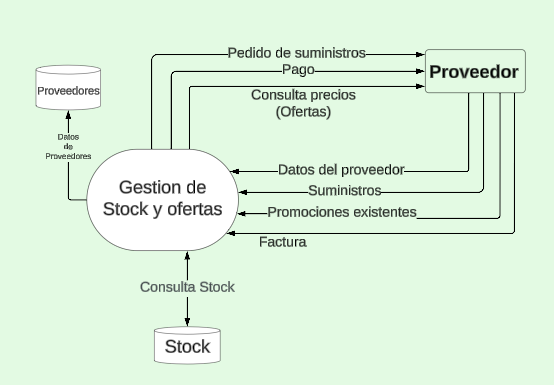

El sistema es una plataforma integral que gestiona ventas, reparaciones y control de stock en un negocio de equipos informáticos. Facilita la selección de productos, el diagnóstico de reparaciones, y la reposición automática de inventario cuando es necesario. Además, organiza el trabajo del personal, asignando turnos y roles según la disponibilidad. Todo el proceso, desde la compra hasta la reparación, queda registrado para asegurar un seguimiento preciso y optimizar las operaciones del negocio.
Entrevistas generales
¿A dónde apunta o cuáles son las necesidades que quiere abordar?
¿Cuáles son los procesos clave que debe cubrir este sistema?
¿Qué tipos de usuarios interactúan con el sistema (clientes y personal)?
¿Cómo se manejan las ventas cuando el producto no está disponible en el inventario?
¿Hay un proceso establecido para pedir automáticamente productos a los proveedores?
¿Cuáles son los métodos de pago aceptados actualmente?
¿Existen integraciones con bancos o sistemas fiscales que deban automatizarse?
Área de gestión de reparación de equipos:
¿Cómo se registran las solicitudes de soporte técnico?
¿Qué tipo de información se necesita registrar para cada reparación?
¿El diagnóstico de los equipos es realizado por el personal técnico?
¿Cómo se gestiona la comunicación con el cliente durante el proceso de reparación?
¿Sería útil tener un historial de reparaciones de cada equipo?
Área de compras de suministros:
¿Cómo se manejan actualmente los productos con stock limitado?
¿Con qué frecuencia necesita actualizar la disponibilidad de stock?
¿Cómo se gestionan las devoluciones o reclamos de productos defectuosos de los proveedores?
Área de recursos humanos:
¿Cómo se gestionan los turnos y la disponibilidad de los técnicos?
¿Qué información se necesita sobre el personal que gestionará las ventas y reparaciones?
Área de venta y facturación:
¿Qué detalles adicionales necesita en el proceso de facturación (producto, cantidad, precio)?
¿El sistema debería permitir la integración con autoridades fiscales externas (por ejemplo, el SAT)?
¿Qué tipo de documentación es necesario generar con cada venta (facturas, recibos, etc.)?
¿Qué datos necesitas que se guarden en el historial de ventas (cliente, producto vendido, cantidad, precio, fecha)?
El sistema comienza cuando el cliente, como entidad externa, interactúa con el mismo, presentandose dos opciones: ventas y reparación de equipos. Si el cliente selecciona la opción de ventas, entrará en un proceso que le mostrará una lista de productos disponibles para adquirir. Este proceso está vinculado al control de inventario, que se encarga de comprobar la disponibilidad de los productos solicitados. Si en este proceso se detecta un bajo nivel de stock, se contactará al proveedor, responsable de suministrar y reponer los productos para asegurar futuras existencias del producto.
Una vez que el cliente encuentra el producto que desea adquirir, se le muestran los detalles de la compra, como el precio y las especificaciones del producto. Si el método de pago no es en efectivo, se iniciará el proceso de gestión de caja, que enviará la información de pago al banco para su validación. Al confirmar la compra, el sistema de ventas registrará la transacción en la base de datos del historial de ventas, donde se guarda toda la información relevante, incluyendo los productos vendidos, precios y datos del cliente. Esto finaliza el proceso de ventas y asegura un seguimiento adecuado.
Por otra parte, si el cliente selecciona el servicio técnico, el sistema lo llevará al proceso de reparación. En este proceso, se registrarán los datos del equipo y se generará un diagnóstico del problema para su reparación, si es requerida. Esta información se almacena en la base de datos de reparaciones, donde se incluyen todos los detalles sobre la solicitud, el equipo en cuestión y el estado de cada solicitud.

La gestión de stock juega un papel crucial en este proceso. Cuando el sistema detecta que un producto está a punto de agotarse, se genera una alerta de "Pedido de Suministros" para solicitar la reposición de inventario. El sistema también tiene la capacidad de actualizar automáticamente los precios y promociones en función de las condiciones ofrecidas por los proveedores, lo que se refleja tanto en el sistema de ventas como en el de inventario. Esto garantiza un control eficiente del stock y permite ajustar las ofertas de acuerdo con la disponibilidad y precios actuales.
El sistema también incluye la gestión de personal, lo que abarca la recolección de información sobre los empleados, la asignación de roles y responsabilidades, así como la planificación de turnos y horarios. Esto asegura que tanto en el área de ventas como en el de reparaciones siempre haya personal disponible para llevar a cabo las tareas asignadas. El sistema coordina los horarios y asigna a los técnicos o vendedores de acuerdo con su disponibilidad.